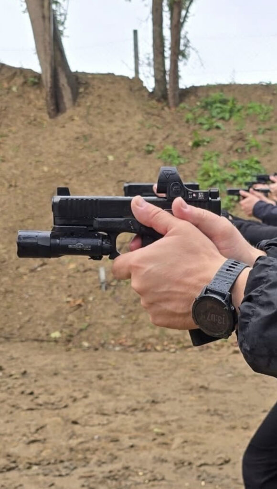
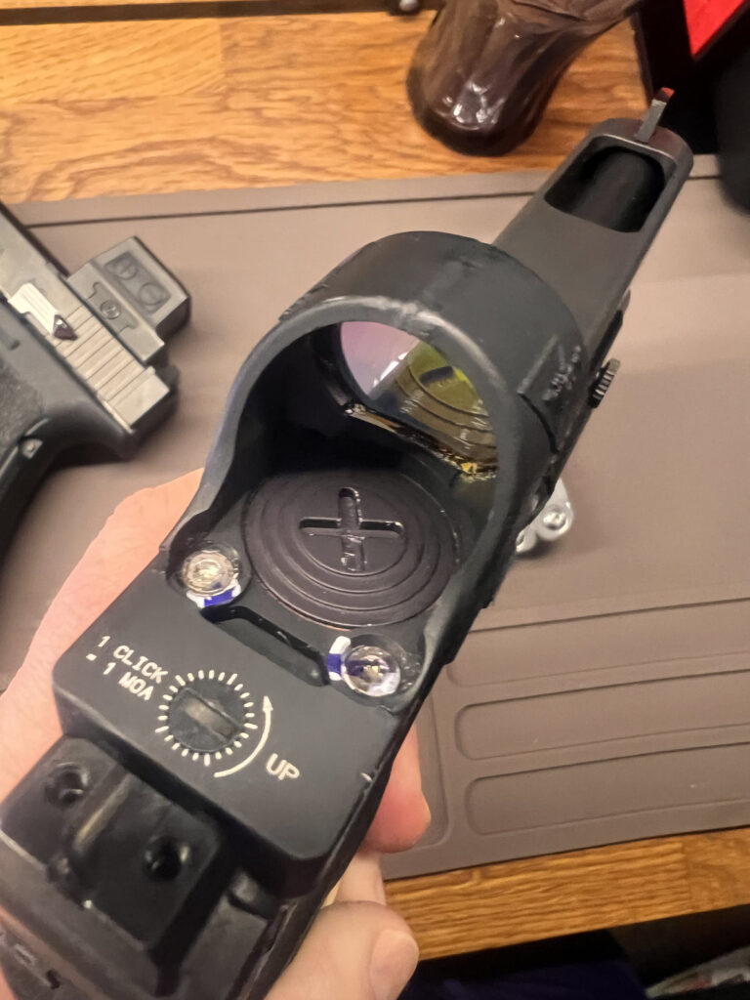
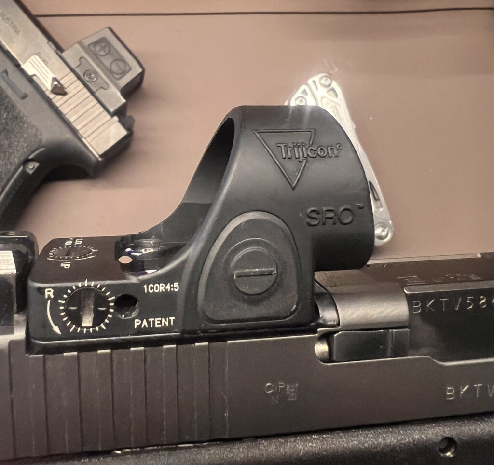
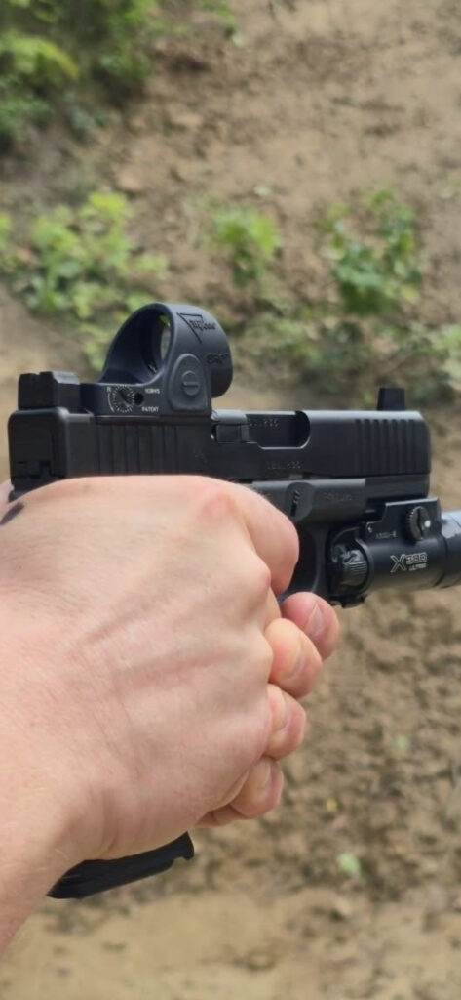
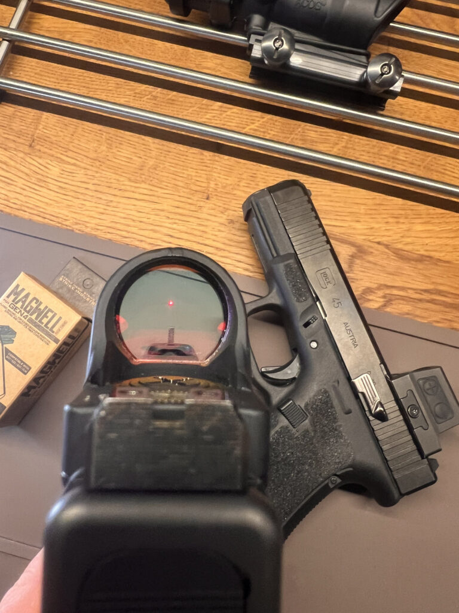
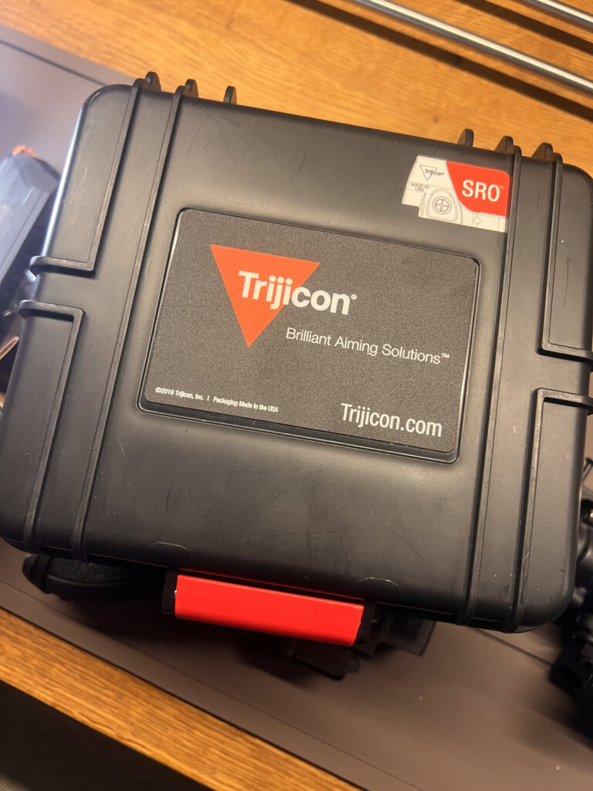

Trijicon SRO 5 MOA — recenzja króla dużych kolimatorów. Rok na Glocku 34, w tym szkolenie w błocie
2026-08-22
Kolimatorów na pistolet jest dziś od groma. Ale jak pada nazwa „SRO”, w każdym strzeleckim towarzystwie ktoś kiwa głową z uznaniem. Sprawdziłem czy słusznie — mój egzemplarz siedzi na Glocku 34 gen 4 od ponad roku, przeszedł ze mną między innymi sześciogodzinne szkolenie w błocie i deszczu. Oto co z tego wyszło.

Co to właściwie jest
SRO, czyli Specialized Reflex Optic, to następca legendarnego RMR-a od Trijicona. Różnica którą widać od pierwszego spojrzenia: okrągłe, ogromne okno. Ma jakieś 25 na 23 mm, czyli około 59% więcej pola widzenia niż RMR. I to jest cała filozofia tej optyki — dać oku jak najwięcej przestrzeni, żeby szybciej złapać kropkę i nie zgubić jej przy dynamice.
Obudowa to kute aluminium 7075-T6, ten sam stop co w RMR. Footprint też ten sam co RMR — czyli jak twój zamek jest frezowany pod RMR albo masz odpowiednią płytkę, SRO wejdzie bez kombinowania. Zasilanie z baterii CR2032, wodoszczelny, elektronika wzięta ze sprawdzonego RMR-a.

Wersje — którą wybrać
Trijicon daje trzy rozmiary kropki, wszystkie z regulowanym LED:
Jedynka (1 MOA) — najmniejsza, pod precyzję i dłuższy dystans, sprawdza się bardziej na karabinku niż na krótkiej.
Dwa i pół (2.5 MOA) — złoty środek, najpopularniejsza, kompromis między szybkością a precyzją.
Piątka (5 MOA) — największa, moja. Najszybsza do złapania okiem, najczytelniejsza, robiona pod dynamik i szybkie strzelanie. Dla obrazu: 5 MOA to jakieś 1,5 cm na 10 metrach — czyli kropka realnie zasłania kawałek celu na dystansie, ale w zamian znajdujesz ją w oknie w ułamku sekundy.
Nowość z 2026 — Trijicon wypuścił wersję z zielonym LED-em w 2.5 MOA. Zielony jest jaśniejszy przy niższej mocy, dłużej ciągnie baterię i lepiej wygląda dla osób z astygmatyzmem. Na razie tylko 2.5, nie ma zielonej piątki ani jedynki. Do wyboru czerń albo coyote brown.
Jak to się sprawdza w robocie
Powiem wprost — to świetny kolimator. Okno jest tak duże, że znalezienie kropki i obserwacja celu przez szkło to czysta przyjemność. Wiadomo, z każdego kolimatora na pistolet trzeba się najpierw wystrzelać, żeby nie gubić kropki przy dobyciu — to kwestia wypracowania powtarzalnego chwytu i wyciągnięcia broni. Ale akurat w tym modelu, dzięki temu wielkiemu oknu, jest to zdecydowanie łatwiejsze niż w mniejszych konstrukcjach.
Wizualnie też robi robotę — Trijicon jak zwykle odwalił kawał dobrej roboty. Kolimator jest solidny, mocny, dobrze wykonany, czuć że to sprzęt z górnej półki. Szkło czyste, kropka ostra.
Bateria montowana jest od góry, więc nie trzeba zdejmować optyki żeby ją wymienić — i nie tracisz zera. Do wymiany jest specjalny kluczyk w zestawie. U mnie przez ponad rok bateria się nie wyczerpała, więc na razie nie miałem okazji tego testować w praniu, ale sama idea top-load to duży plus.

Test w błocie — otwarty emiter kontra pogoda
Tu dochodzimy do jedynego realnego minusa konstrukcji tego typu. SRO ma otwarty emiter — czyli dioda świeci przez otwartą przestrzeń, nie jest zamknięta w tubie. W praktyce oznacza to, że błoto, śnieg czy deszcz mogą narobić problemu.
Sprawdziłem to na własnej skórze podczas ponad sześciogodzinnego szkolenia w błocie i strugach deszczu. I faktycznie — był lekki problem. Kropka bywała rozmyta, komfort mniejszy. Ale — i to ważne — po strzepnięciu wody z kolimatora wszystko wracało do normy. Nie było tragedii, kropka cały czas była widoczna, dało się strzelać. Do pełnego komfortu trochę brakowało, ale broń działała.
Wniosek jest prosty: w takich warunkach zamknięty emiter (jak w Holosunie 509T czy Aimpoincie ACRO) sprawdzi się lepiej. Ale jeśli twoje strzelanie to głównie sport, trening i strzelnica, a nie front 🙂 — SRO da radę.

Uwaga o którą łatwo się potknąć — długość i okno wyrzutowe
To rzecz, o której trzeba wiedzieć zanim kupisz. SRO jest dość długi — ma około 46 mm. Sam Trijicon w instrukcji ostrzega wprost: nie montować, jeśli przód optyki wystaje nad okno wyrzutowe łusek.
Na krótszych zamkach potrafi to być realny problem. Na forach pełno relacji z 1911, Siga P320 X5 czy krótkich zamków, gdzie przednia krawędź SRO jest zbyt blisko okna wyrzutowego — kończyło się to zacięciami albo koniecznością dokupienia jakiejś innej płytki, która przesuwa optykę do tyłu. Na dłuższych zamkach nie ma tematu.
U mnie na Glocku 34 i Glocku 45, wszystko siedzi jak trzeba i nie miałem z tym najmniejszego problemu. Ale jeśli myślisz o SRO na krótszy pistolet — najpierw sprawdź, czy optyka nie zachodzi na okno wyrzutowe.

Co jest w pudełku
Podstawowy komplet ale niczego nie brakuje: kolimator, otwieracz do baterii (ten kluczyk), zapasowe baterie, śrubki, no i naklejka Trijicona. Wszystko czego trzeba żeby zamontować i strzelać.

Cena — boli, ale wiadomo za co
Nie ma co owijać: SRO 5 MOA to w polskich sklepach wydatek rzędu 4500 zł. Dużo. Można sprobować kupić taniej używkę za 2500-2000 zł. moim zdaniem wart tej ceny — dostajesz sprzęt, który po prostu działa i jest zrobiony jak czołg.
Mam u siebie różne kolimatory — Holosuna 509T, miałem Siga Romeo, mam też spory kolimator od Vector Optics. I umówmy się, nie ma co ich zestawiać z SRO, to inne półki i inne zastosowania (509T z zamkniętym emiterem to zresztą temat na osobną recenzję). Ale mając to rozeznanie mogę powiedzieć jedno: SRO to mój faworyt. Szukam już kolejnego, bo najchętniej założyłbym go na wszystkie swoje pistolety.
Dla kogo to jest
Bierz SRO 5 MOA, jeśli:
- Strzelasz sport i dynamik, zależy ci na szybkim łapaniu kropki i wielkim oknie.
- Masz pistolet z dłuższym zamkiem (albo frezowany pod RMR) i okno wyrzutowe nie koliduje z optyką.
- Chcesz sprzęt na lata i nie odstrasza cię cena.
Zastanów się dwa razy, jeśli:
- Nosisz broń codziennie w każdą pogodę i sprzęt musi znosić błoto oraz deszcz bez mrugnięcia — wtedy patrz w stronę zamkniętego emitera.
- Masz krótki zamek, gdzie SRO zachodzi na okno wyrzutowe.
- Szukasz taniej niż te ceny używek — bo tu taniej nie będzie.
Werdykt
SRO 5 MOA to dla mnie król dużych kolimatorów. Wielkie okno, czyste szkło, świetne wykonanie i ta pewność, że masz na zamku kawał porządnego sprzętu. Ma swoje ograniczenia — otwarty emiter nie kocha błota, a długa obudowa nie pasuje do każdego pistoletu — ale jak dopasujesz go do właściwej broni i właściwego zastosowania, to trudno o lepszy wybór. U mnie na Glocku 34 zdaje egzamin od ponad roku i nie zamieniłbym go na nic innego. Zdecydowanie faworyt.
Ku Dłacz
#ŁączyNasCel